HUYỆN VŨ THƯ TỔ CHỨC HỘI NGHỊ TUYÊN DƯƠNG HỌC SINH GIỎI NĂM HỌC 2017-2018
Thực hiện kế hoạch nhiệm vụ năm học, trong không khí của những ngày tháng Năm lịch sử cả nước kỷ niệm 128 năm ngày sinh Chủ tịch Hồ Chí Minh, được sự chỉ đạo của Sở Giáo dục và Đào tạo Thái Bình và sự đồng ý của Huyện ủy, UBND huyện Vũ Thư, chiều ngày 18/5/2018, tại hội trường UBND huyện, Phòng Giáo dục và Đào tạo đã long trọng tổ chức Hội nghị tuyên dương khen thưởng thành tích học sinh giỏi năm học 2017-2018.
Đây là hoạt động thường niên và đã trở thành nề nếp của ngành giáo dục huyện nhà. Về dự và chỉ đạo hội nghị có đồng chí Vũ Hồng Quân – Phó bí thư Thường trực Huyện ủy – Chủ tịch HĐNH huyện Vũ Thư; đồng chí Phạm Công Diện – Huyện ủy viên – Phó chủ tịch UBND huyện Vũ Thư cùng các đồng chí ủy viên Ban Thường vụ Huyện ủy, các đồng chí Thường trực Huyện ủy, HĐND, UBND, các đồng chí trong Hội đồng giáo dục huyện, các đồng chí lãnh đạo các ban ngành đoàn thể, tổ chức chính trị - xã hội của huyện, phóng viên báo đài của tỉnh, của huyện về đưa tin hội nghị. Về phía ngành có nhà giáo Trần Quang Thắng – Huyện ủy viên – Trưởng phòng Giáo dục và Đào tạo cùng các đồng chí lãnh đạo, chuyên viên của Phòng; các đồng chí hiệu trưởng của 30 trường THCS trong huyện; các thầy cô giáo trực tiếp bồi dưỡng các đội tuyển học sinh giỏi lớp 9 của huyện, các thầy cô giáo bồi dưỡng các đội tuyển lớp 6, 7 và 8 xếp thứ nhất huyện cùng với các em học sinh đạt giải trong kỳ thi chọn học sinh giỏi lớp 9 cấp tỉnh.
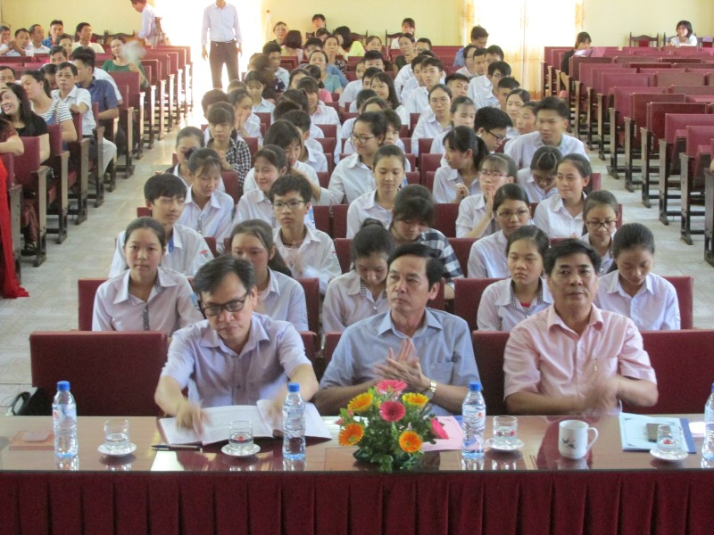
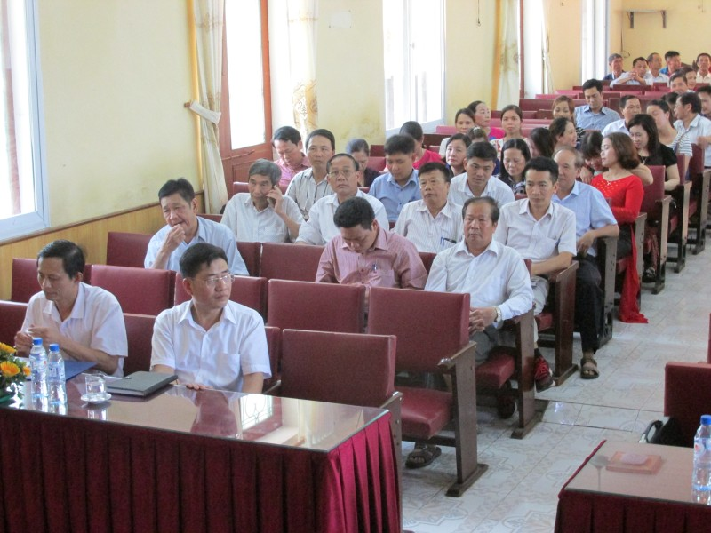
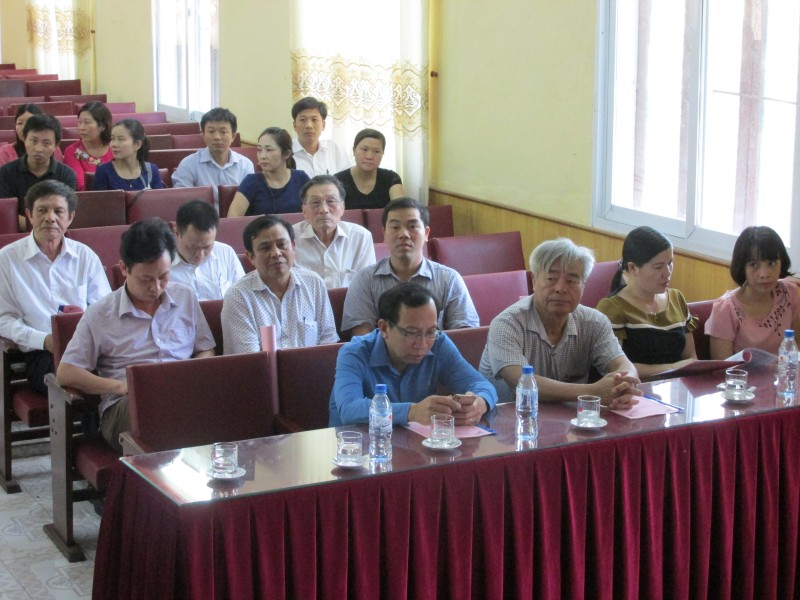
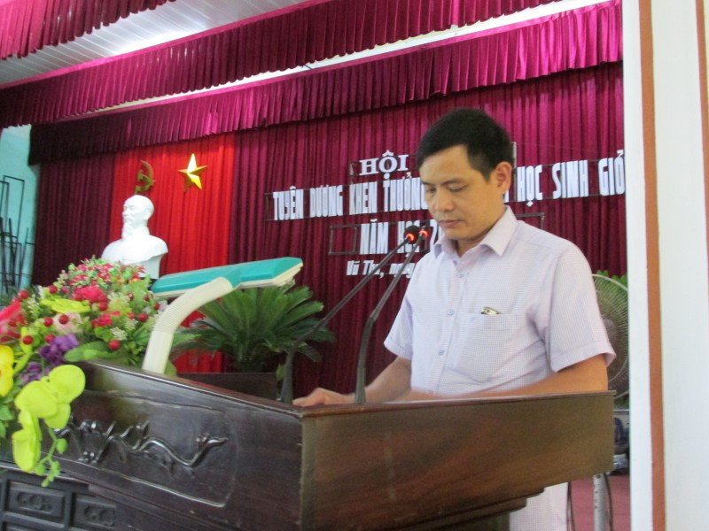
Thay mặt lãnh đạo ngành, nhà giáo Nguyễn Đức Thuận – Phó trưởng phòng Giáo dục và Đào tạo đã báo cáo tổng kết công tác phát hiện và bồi dưỡng học sinh giỏi năm học vừa qua. Có thể nói đây là một trong những năm học mà ngành giáo dục huyện nhà đã gặt hái được nhiều thành công rực rỡ, tiếp tục khẳng định vị trí tốp đầu và thương hiệu chất lượng giáo dục của Vũ Thư trong tỉnh.
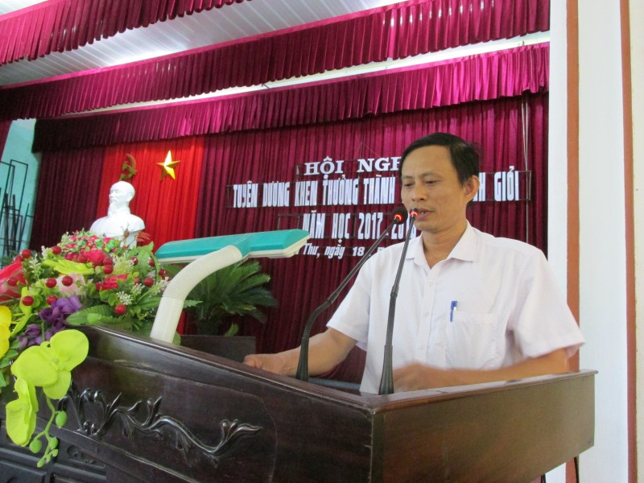
Trong kỳ thi HSG lớp 9 cấp tỉnh tổ chức ngày 15/12/2017, đoàn học sinh giỏi huyện Vũ Thư đã vượt qua những đơn vị có thế mạnh về học sinh giỏi trong tỉnh như Thành phố, Đông Hưng để xếp thứ Nhất toàn tỉnh (năm học 2014-2015 Vũ Thư cũng đã xếp thứ nhất), trong đó các đội tuyển Ngữ văn, Hóa học, Sinh học, Lịch sử cùng giải Nhì; đội tuyển Toán, Địa lý giải Ba, Vật Lý và Tiếng Anh giải Khuyến khích. Về cá nhân, trong 80 học sinh dự thi thì có 60 em đạt giải chiếm 75%, trong đó 07 giải Nhất, 18 giải Nhì, 17 giải Ba và 18 giải Khuyến khích. Có những trường ba năm liên tục trong tốp 10 trường thành tích cao của huyện về học sinh giỏi lớp 9 cấp tỉnh như THCS Thị Trấn, Thanh Phú, Chu Văn An. Bên cạnh đó là sự nỗ lực cố gắng không mệt mỏi của các nhà trường, tiêu biểu cho sự bứt phá về học sinh giỏi cấp tỉnh lớp 9 như THCS Song Lãng (Năm 2017-2018 có tới 10 học sinh giỏi cấp tỉnh/104 học sinh toàn khối 9 của nhà trường).
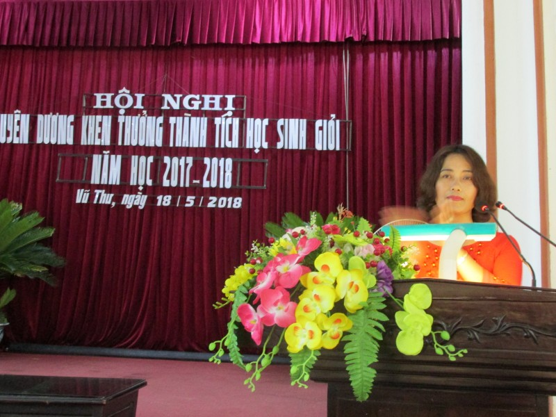
Trường THCS Thị Trấn tiếp tục khẳng định vị trí số 1 của mình về học sinh giỏi với 245 học sinh được công nhận học sinh giỏi chiếm 20,96% số học sinh giỏi khối 6, 7, 8 của cả huyện. Trong 11 môn khảo sát thì THCS Thị Trấn có 2 đội đạt giải Nhất là Toán 6, Toán 7; THCS Vũ Hội 2 giải Nhất là Hóa 8, Anh 7; các giải Nhất còn lại gồm bẩy trường mỗi trường 1 giải Nhất: THCS Vũ Vinh (Anh 7), Song An (Anh 8), Chu Văn An (Văn 7), Bách Thuận (Văn 6), Thanh Phú (Lý 8), Hiệp Hòa (Văn 8) và Dũng Nghĩa (Toán 8). Các trường THCS Thị Trấn, Vũ Hội, Vũ Vinh mỗi trường có từ 4 đến 5 đội tuyển nằm trong tốp 5 đứng đầu toàn huyện. Những trường có bứt phá mạnh về thành tích học sinh giỏi khối 6, 7, 8 như THCS Phúc Thành vượt 14 bậc, Dũng Nghĩa vượt 11 bậc, Bách Thuận vượt 6 bậc, … Có những đơn vị có số lượng học sinh ít nhưng đã có nhiều giải pháp quyết liệt vượt khó vươn lên như Vũ Vinh, Dũng Nghĩa, Hiệp Hòa, Hồng Phong, Hồng Lý,… Năm học 2017-2018, toàn bậc học THCS trong huyện có 1581 em đạt HSG các cấp, trung bình cứ khoảng 7,32 học sinh thì có 1 học sinh giỏi. Điều đó đã thể hiện sự cố gắng nỗ lực vì phong trào, vì sự phát triển năng lực, phẩm chất học sinh của ban giám hiệu và tập thể nhà trường cũng như sự chung tay của các bậc phụ huynh học sinh.
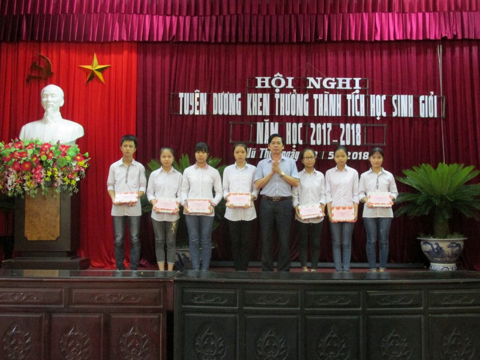
Đã có nhiều gương các thầy cô giáo, các cán bộ quản lý tận tâm, tận lực với công tác bồi dưỡng học sinh giỏi cho huyện, cho trường, liên tục nhiều năm có thành tích cao và cũng có những thầy cô giáo ở các nhà trường trong suốt các năm học vừa qua thầm lặng góp sức mình vào thành tích chung của đoàn học sinh giỏi của huyện. Đó là các thầy cô như cô Nguyễn Thị Tươi môn Sinh (Thanh Phú), cô Nguyễn Thị Thu Hương môn Sinh (Hồng Lý) nhiều năm liền có học sinh đạt giải cao cấp tỉnh; cô Đinh Thị Lan môn Sử (Chu Văn An), cô Nguyễn Thị Phương Loan, Bùi Thị Hồng Gấm môn Tiếng Anh (Song An),… và nhiều tấm gương của các thầy cô ở các đơn vị khác đã có nhiều năm bồi giỏi có thành tích cao. Đặc biệt có những thầy cô rất trẻ thậm chí họ còn chưa được chính thức tuyển dụng vào biên chế nhưng với lòng tha thiết yêu nghề, miệt mài nghiên cứu hăng say giảng dạy nên nhiều năm liền đạt thành tích cao họ xứng đáng là những tấm gương cho đồng nghiệp như cô Nguyễn Thị Thanh Nhàn (Giáo viên hợp đồng THCS Vũ Vinh) 4 năm liền bồi đội tuyển Tiếng Anh của trường trong tốp 5 của huyện, cô giáo Phạm Thị Thúy Quỳnh (Giáo viên hợp đồng THCS Dũng Nghĩa) bồi dưỡng đội tuyển Toán 8 xếp thứ Nhất huyện,… Cũng không thể không kể đến tinh thần khắc phục khó khăn thử thách, quyết tâm rèn luyện và phấn đấu của các em học sinh để bước tới những đài vinh quang với những giải nhất học sinh giỏi lớp 9 cấp tỉnh như em Đinh Thùy Linh (Thanh Phú), Lê Hoàng Anh (Hồng Lý), Đỗ Thị Minh Thư (Dũng Nghĩa) môn Sinh học; Nguyễn Thị Liên, Phạm Thị Nhàn (Chu Văn An) môn Lịch sử; Phạm Thị Quyên (Việt Hùng) môn Ngữ văn; Nguyễn Thị Kim Dung (Thanh Phú) môn Địa lí,...
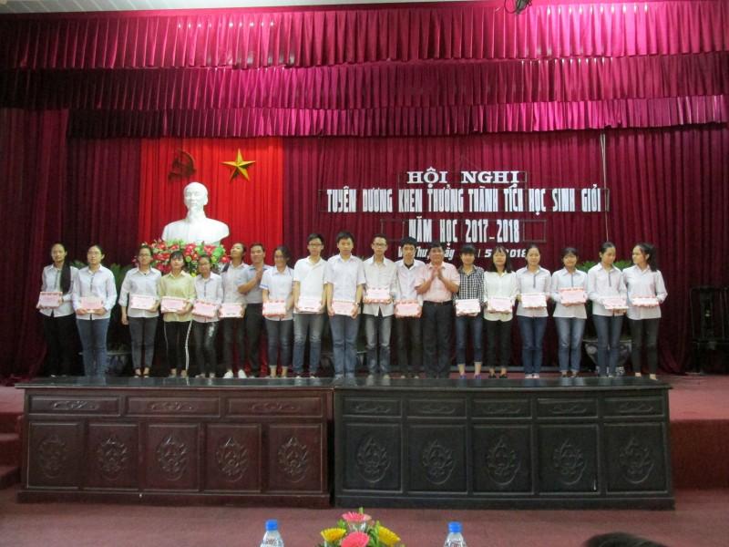
Trong cuộc thi Sáng tạo khoa học kỹ thuật dành cho học sinh trung học năm học 2017-2018, năm sản phẩm có chất lượng của các trường THCS Hồng Phong, Vũ Vân, Tân Hòa, Việt Hùng, Bách Thuận tham gia cuộc thi cấp tỉnh. Kết quả là sản phẩm Máy cắt tỉa cành của hai em học sinh THCS Bách Thuận đạt giải Nhì. Bốn sản phẩm còn lại đạt giải Khuyến khích.
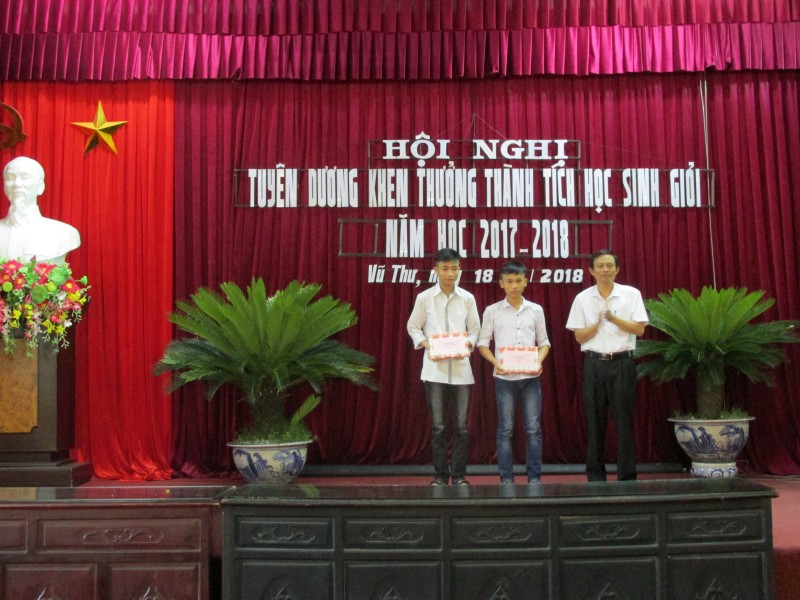
Hội nghị cũng được nghe tham luận của cô giáo Nguyễn Thị Phượng – Giáo viên Trường THCS Thị trấn bồi dưỡng đội tuyển Ngữ văn 9 với thành tích xếp thứ hai toàn tỉnh và cô giáo Phạm Thị Hồng Kiên – Hiệu trưởng Trường THCS Song Lãng, đơn vị đã có sự bứt phá tăng 8 bậc lên vị trí thứ hai về học sinh giỏi toàn huyện. Các cô giáo đã chia xẻ những bài học kinh nghiệm và tâm huyết trong công tác giảng dạy cũng như chỉ đạo để có được kết quả ngày hôm nay.
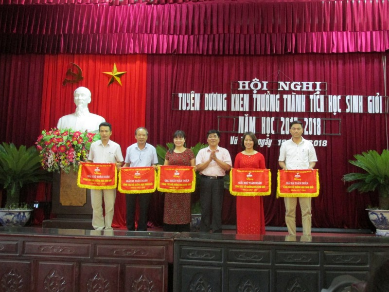
Sau phần trao thưởng cho thầy và trò, thay mặt Huyện ủy, UBND huyện, đồng chí Phạm Công Diện đã phát biểu ý kiến ghi nhận những cố gắng và những thành công trong công tác phát hiện và bồi dưỡng học sinh giỏi của ngành giáo dục. Đồng chí cũng bày tỏ tin tưởng vào những bước phát triển mạnh mẽ, vững chắc của giáo dục huyện nhà trong thời gian tới, góp phần thực hiện thắng lợi Nghị quyết Đại hội Đảng bộ huyện lần thứ XV nhiệm kỳ 2015-2020.
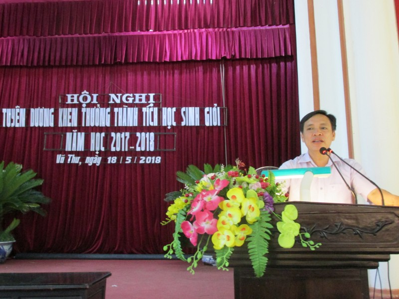
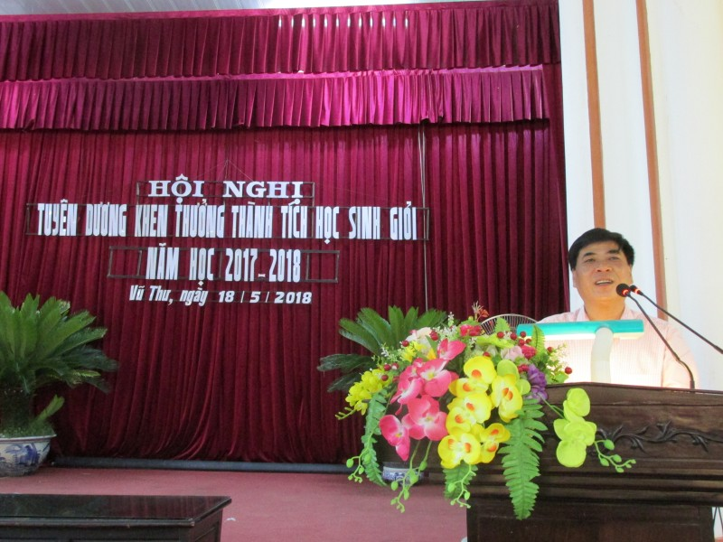
Thay mặt ngành, nhà giáo Trần Quang Thắng tiếp thu ý kiến chỉ đạo của lãnh đạo huyện, đồng thời khẳng định quyết tâm của toàn ngành không ngừng thi đua dạy thật tốt, học thật tốt, phấn đấu nâng cao chất lượng toàn diện trong đó có chất lượng mũi nhọn vì một nền giáo dục thực chất, hiệu quả, đáp ứng yêu cầu công nghiệp hoá, hiện đại hoá trong điều kiện kinh tế thị trường định hướng XHCN và hội nhập quốc tế.
Hội nghị tuyên dương khen thưởng thành tích học sinh giỏi năm học 2017-2018 huyện Vũ Thư đã thành công tốt đẹp./.